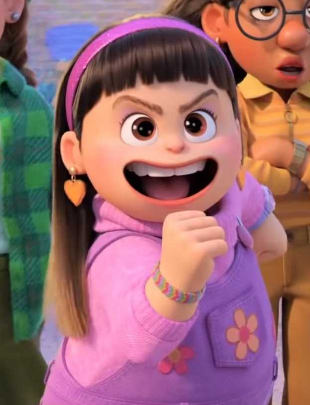

FELICIDADES!!! SABIA QUE LO LOGRARIAS!!!
Y se que lograras aun muchas cosas mas asi que ten un poco de paciencia y ya se que me diras "no, no quiero tener paciencia" pero ni modo toca

Y de alguna forma lo lograras porque aunque digas que ya no aguantas lo sigues haciendo y aguantando como leona (la calidad del gif ta fea no la veas mucho)
Que como lo se? pues te la pasas aguantandome a mi XD... y aunque las cosas sean dificiles aunque no ayudo de mucho espero poder estar ahi escuchandote quejarte almenos

Pero ya solo queda decir... Felicidades Lic. Nicowo